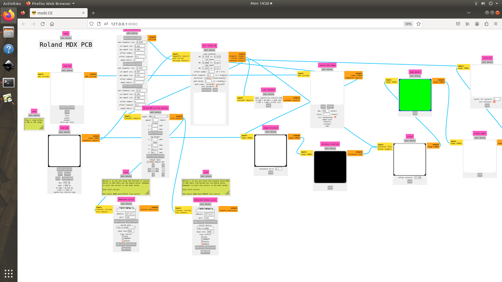
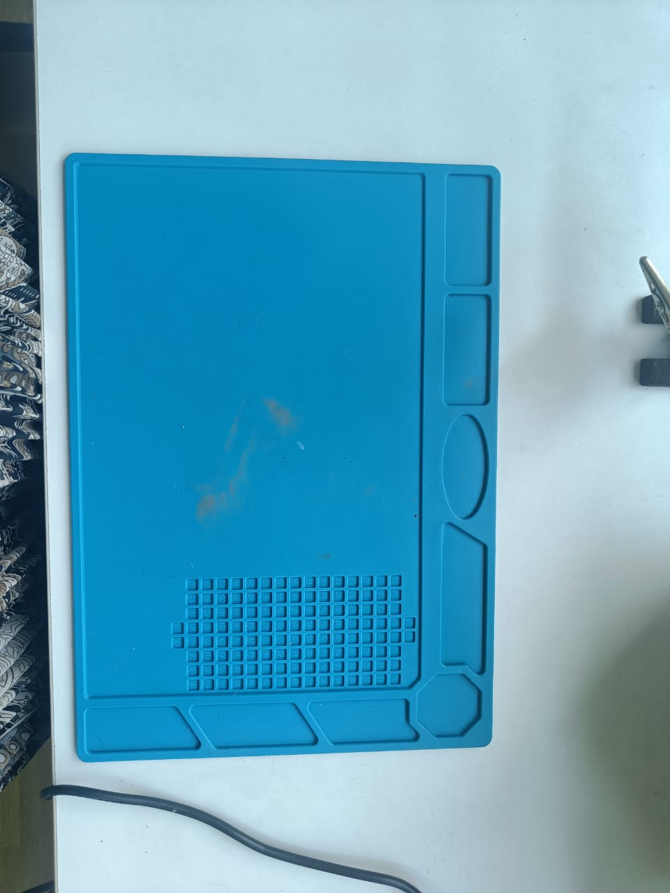
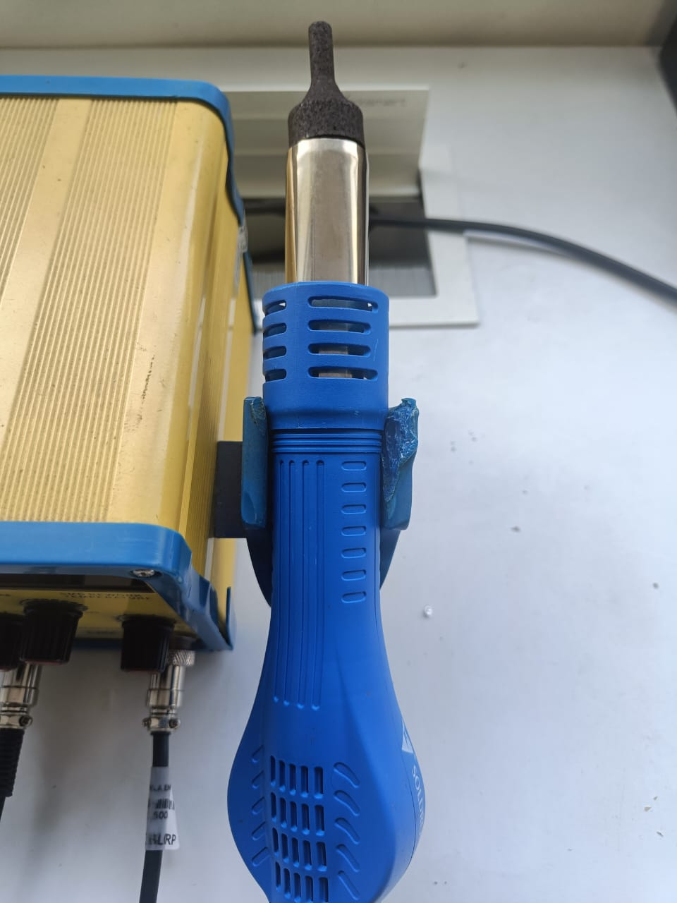
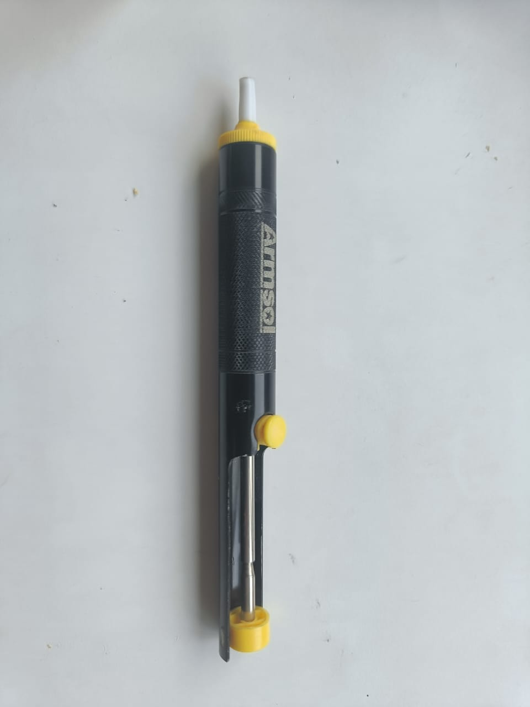
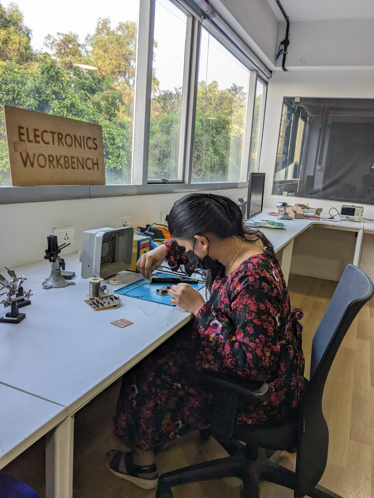
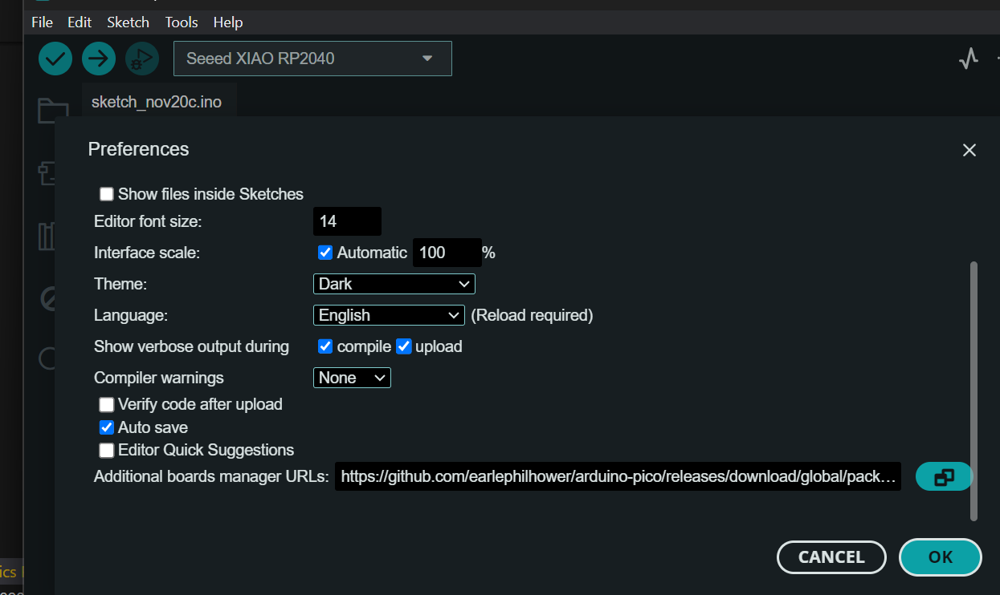
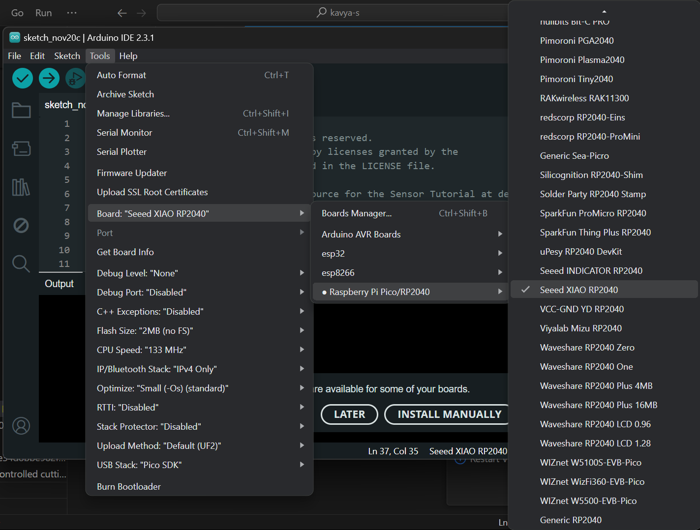
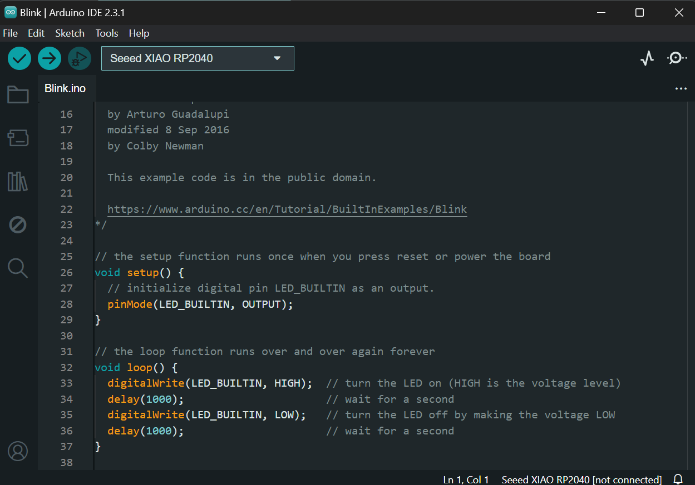

Week -4 - Electronics Production
Assignment Objectives for the week:
Group assignment:
- To characterize the design rules for your in-house PCB production process
- To send a PCB out to a board house
Link for the group assignment
Individual assignment:
- To make an in-circuit programmer by milling and stuffing the PCB, test it, then optionally try other PCB fabrication process.
- To make and test a microcontroller development board
extra credit: personalize the board
extra credit: make it with another process
Learning outcomes
- Described the process of milling, stuffing, de-bugging and programming
- Demonstrate correct workflows and identify areas for improvement if required
Personal Checklist:
Have you
- linked to the group assignment page
- Documented how you made (mill, stuff, solder) the board
- Documented that your board is functional
- Explained any problems and how you fixed them
- Included a ‘hero shot’ of your board
PCB (Printed Circuit Board) fabrication:
Dead bug:
Dead bug prototyping and freeform electronics are a way of building working electronic circuits, by soldering the parts directly together, or through wires instead of the traditional way of using a printed circuit board (PCB.)
The neat thing about building circuits without boards is that it removes the need for everything to be on a plane, making for more interesting looking 3D circuits, rather than 2D circuits. Geometry comes more into play this way, and the way parts are manufactured, the number of leads, how they are organized all limit, and shape the way the parts can fit together.
In the fabrication laboratories (fab labs), our standard approach for PCB production involves the utilization of the milling machining technique. This method enables individuals to create PCB prototypes akin to printing on paper with a conventional printer. To facilitate PCB milling, our fab lab is equipped with a **Roland MDX 20** 3-axis milling machine. This machine serves as a versatile milling apparatus suitable for crafting PCBs alongside other milling applications.
Etching:
PCB etching process is one of the major steps in the chemical processing of subtractive printed circuit board. It is the removal of copper, to achieve the desired circuit patterns. In PCB etching process, all copper is removed except the circuitry that is protected by the tin plating applied during the previous treatment in PCB manufacture. The tin is then stripped and the copper is cleaned and the newly prepared circuit is ready for solder mask.

PCB Etching Process
It is easy and fun to etch small number of simple pcb boards by yourself at home.
1. The Benefits of Etch a PCB by Yourself:
- No MOQ - You can make no matter how many pieces pcb boars you want
- It takes less time than to order from a pcb manufacturer
- It is really fun and rewarding for hobbyists
However, it may occur some issues during the pcb etching process, and because of dangerous chemicals and power tools, you should protect yourself by some methods.
2. Some Issues While Etching:
- There is a risk of injuries due to the chemicals involved
- The quality may not be as good as expected at the first time, such as over-etching
- You may be a problem of toxic chemicals waste disposal
3. Protect Yourself While Etching:
- Wear gloves, protection glasses, and an apron during the whole process
- Work near an emergency eyewash station
- Prepare a first aid box and a phone in advance
Lithography:
I went through a nicely prepared presentation here
I have replicated the board created by Quentin Bolséeand redesigned byAdrián Torres. Quentorres is born at the 2024 Instructors Bootcamp held in León. I customised the board by adding my logo.Editing the file for milling using Paint to add my initials "KS".

Roland MDX PCB:
The Roland MDX series of milling machines, such as the MDX-40A or MDX-50, out of which we used MDX-20, capable of milling various materials, including PCB (Printed Circuit Board) materials. Here are the features of the Roland MDX mill PCB and the steps for creating traces and cutting the PCB:
Features of Roland MDX Mill PCB:
- High Precision Milling: The Roland MDX series offers high precision milling capabilities, allowing for precise milling of intricate PCB designs with tight tolerances.
- User-Friendly Interface: These machines feature user-friendly software interfaces, making it easy to import designs and set up milling jobs.
- Versatile Material Compatibility: The Roland MDX mill PCB is compatible with various PCB materials, including FR-4, copper-clad laminates, and other substrate materials commonly used in PCB manufacturing.
- Integrated Spindle: The machines come with an integrated spindle motor capable of milling PCBs with high accuracy and surface finish.
- Automatic Tool Changer (Optional): Some models may come with an automatic tool changer, allowing for automated tool changes during the milling process, enhancing efficiency and flexibility.
Steps for Creating Traces and Cutting the PCB using Roland MDX Mill PCB:
- Design PCB Layout: Using PCB design software, we can design the layout of your PCB including traces, pads, vias, and other necessary elements. For this activity, we used the file from QuenTorres Board from the link provided
- Import Design into Roland CAM Software: The design was cutomised with my initials using the Paint software and imported to the machine using MODS interface through the following steps:

- Set Milling Parameters: Configure the milling parameters such as cutting depth, spindle speed, and tool diameter based on the material and design requirements.


- Tool Path Generation: Generate the tool paths for milling the traces and cutting the PCB from the imported Gerber files. The CAM software will automatically generate the tool paths based on the design specifications. Origin can be set and tool path will be generated as follows:


- 
- Material Setup: Secure the PCB material to the milling bed of the Roland MDX machine using double-sided tape or clamps, ensuring it is firmly held in place.
- Tool Installation: Install the appropriate milling and cutting tool (typically a small diameter end mill) into the spindle of the Roland MDX machine. We have tried the tool with 10 mill and 16 mill for creating traces.
- Run Milling Job: Load the generated tool paths into the Roland MDX machine and initiate the milling job. The machine will automatically mill the traces and cut the PCB according to the programmed tool paths.
- Post-Processing: After the milling process is complete, remove the milled PCB from the machine and perform any necessary post-processing steps such as cleaning, inspection, and soldering components.


I am replicating the board created by Quentin Bolsée and redesigned by Adrián Torres. Quentorres is born at the 2024 Instructors Bootcamp held in León. I customised the board by adding my logo.


This board can program the new AVR Series 1 and 2 for example Adrianino and the ARMs for example SAMDino. It also has a button and an LED to learn to program in C, Rust, Go, Micropython... It has breakout pins in case you want to connect other external elements.
Soldering station at 350 deg C along with soldering wire, tweezers and desoldering wire.
Heat Resistant mat for soldering components to my board.
This is a blow gun to remove the solders from the board. The blow gun has to be set at a temperature equal to that of the soldering process to slowly heat the solder and remove it.
Hand-controlled desoldering gun "ArmSol"
Me at the soldering station with safety precautions against lead fumes from the solder.
Schematic
Board
There are two versions:
The XIAO RP2040 can be soldered directly to the board which I followed for designing my board.
Components


Testing and Programming the board for an LED Blink program:
I already had the Arduino IDE interface so I proceeded with the steps shared in the repo for adding the board manager. Step 1: open the Arduino Program In File->Preferences, we will add the URL of the additional boards that you can find here. We need the Arduino-Pico by Earlephilhower.
 Step 2: boards manager The next step is to download Pico in the boards manager. Tools->Board->Board manager configure the Arduino IDE for the Seeed Studio XIAO RP2040. We configure the Arduino IDE for the Seeed Studio XIAO RP2040. The Seeed Studio XIAO RP2040 will appear in the COM port, in my case in COM 3.  Step 3: load the Blink program. Now load the Blink program so that the LED built in blinks. When we upload it, all this information appears in the notifications section.  In this short video you can see the operation of a Blink on pin GPIO 26 (26 in Arduino) where the LED is integrated.The board has an integrated LED and a button. The LED is integrated on GPIO Pin 26 and we have added LED controls to 26, 0 and 1 pins.On setting up the Arduino IDE interface adding Seeed Xiao RP2040 board, the following codes can be used to program the blink program to the board.

The output of the board is displayed in the following gif: